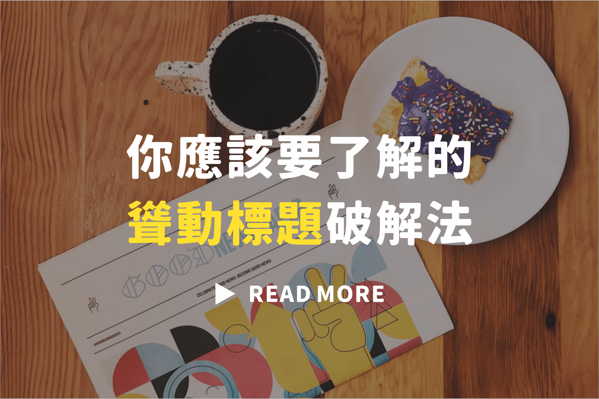

【假新聞糾察隊】眼見不為憑，標題停看聽
圖文製作: 范鐘元
標題可作為內文的前導、重點的摘要。然而，卻也是煽動恐慌、製造動盪的trouble maker。
＃媒體和閱聽人の常見問題
從報章雜誌、有線網路到自媒體，台灣傳媒業者不計其數。身為第四權有義務提供透明屬實的資訊，卻因資本主義的商業運作，抹滅了部分媒體業者的職業道德。為了能夠在海量的訊息中突出，利用中文的博大精深，挑戰媒體誠實的核心價值。誇大浮濫的字眼構成似是而非的標題，傳遞聳動訊息內容，遊走於不實報導邊緣。
此外，媒體識讀的教育方興未艾，觀念不足成熟。閱聽人被各式媒體團團圍住，面對鋪天蓋地的資訊量，卻缺少辨別媒體好壞的能力。多數閱聽人的媒體識讀能力從未跟上媒體生態的轉變。兩者間的落差經常導致不必要的恐慌，浪費難以計量的社會成本。
＃老實講，你是不是也去囤衛生紙了？
回憶起今年初衛生紙之亂！在疫情口罩人人需的背景下，卻引發民眾瘋搶衛生紙、民用品的亂象。根據台灣檢調單位指出，有不肖業者為一己私利，捏造不實消息，「衛生紙原料都拿去做口罩」等類似內容，透過臉書、Line群組病毒式擴散此訊息。簡單幾句話的重量，癱瘓民生用品供應鏈，衍生的囤貨行為也損及真正有需求的人。
事實上，口罩原料為不織布，其產地多半來自台灣；衛生紙的主要成分則來自南美國家的短纖紙漿，兩者並沒有太大關連。各大廠商也相繼出面闢謠，表示衛生紙將供貨穩定，民眾不需過度恐慌！瞬間將網路上的謠言化為無稽之談。
不可否認的是，文字訊息誘發內心情緒進而轉化成實際行動的力量，從不容小覷。
（圖片截自/三立新聞台）
＃科普補給站
民生用品百百種，偏要瘋搶衛生紙？
民眾身處非常時期，對於相關資訊抱持著寧可信其有的心態。就像上述所提「衛生紙之亂」即是典型例子。但你可曾想過，是什麼原因讓搶購衛生紙持續延燒好些時日？
首先，衛生紙不易損壞變質，善於保存的特性使其成為囤貨首選！其替代性低，人人皆需。再者，民眾看著空無一物的貨架，心中難免產生衛生紙將大量缺貨的預期心理，先買起來以防後患。根據心理學教授Baruch Fischhoff 表示：在疫情時長和供貨情況等不確定性之下，囤積行為將會惡化。同時，面對不確定因素時，人會試著從其他人身上找行為依據，你買我也跟著買！ 在危機重重的疫情之下付諸行動，能夠找回民眾心理的安全感和控制權，買衛生紙是件相對“便宜”的行動。
＃數據會說話，是在跟我開玩笑？
英國藥物安全協會曾對外發布聲明：第三代口服避孕藥造成血栓致死的風險是過去的兩倍，血栓風險提高「百分之百！」聳動消息一出，多數女性同胞擔心其副作用而停止服藥，導致意外懷孕、墮胎比率遽增。據統計，隔年約有一萬三千名英國和威爾斯地區女性墮胎、製藥公司股價慘跌，同時帶給英國健保局猛烈衝擊。
深究文章發現，研究數據沒有出入，單純是在相對風險和絕對風險的差異上做文章。由此研究做說明：第二代避孕藥由七千位女性做服用，其中一位出現血栓情況；第三代避孕藥同樣由七千位女性做測試，則約有兩位產生血栓。以下透過圖表幫助讀者進行理解。
有上圖可知，其絕對風險僅增加七千分之一，但相對風險卻翻倍成長。因相對風險數字浮動通常較大，作為標題的效果顯著。文章報導、網路訊息傾向利用「有感數字」來讓論點強而有力。危言聳聽以提高吸睛程度，同時利用文字煽動民眾情緒，最終引發大規模恐慌。
＃如何成為資訊洪流中的一股清流！
由上述案例可一窺其嚴重性，那不計其數的成本代價，最後都是由人民自己買單。倘若能事先建立起媒體試讀的後備能力，何樂而不為？
重點一. 質疑標題
千萬別被文章標題震懾住，需抱持懷疑態度，對其可信度有所保留。並且在資訊尚未查證屬實前，勿隨意分享轉發。
重點二. 詳讀內文
藉由詳閱內文去判斷其下標是否得宜：是否過於偏頗、情緒化、愚昧或蓄意引發戰火等要素，並且從內文中檢視報導所傳達的訊息，而非單一採信標題。
重點三. 多方查證
進一步多方搜索相關文章，並交叉比對內容，確立其可信度和資料來源。
重點四. 專家協助
尋求專家及相關網站查詢。以下也推薦幾個給讀者做參考，希望幫助閱聽眾探究事實原貌。
【美玉姨】
快加美玉姨成為Line好友，遏止假訊息在Line裡面流竄！美玉姨是建立在Line裡的自動回覆機器人，可即時查詢謠言，並短時間內給予回應。此外，因美玉姨不是獨立官方帳號，可直接將其邀進群組，若有疑似假消息的出現，美玉姨可自動判別是否屬實。
【Line 訊息查證】
此為Line官方釋出的查核機制。透由加入@Line Fact Checker，啟用訊息查證功能。若有待查證的可疑資訊，可點選Chatbot中的查證功能進行判別。貼心的是，除了針對不同種類的資訊進行分類，同時間幫用戶整理出最新Top話題，讓你不再被這些發燒話題牽著鼻子走！
點我看參考資料